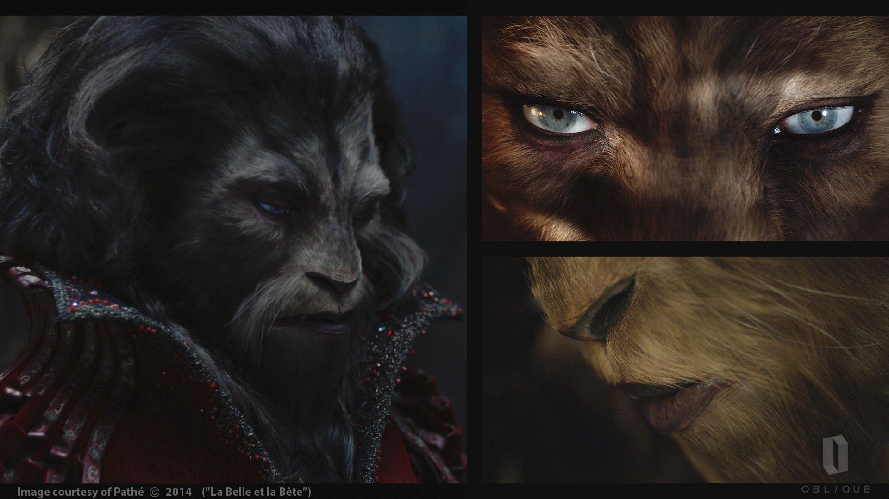
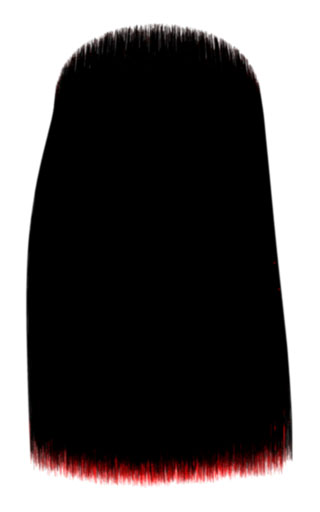
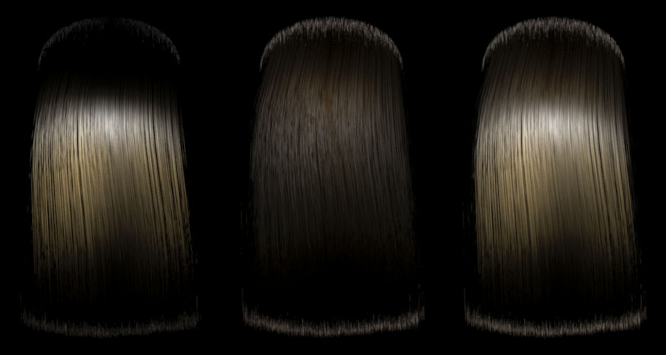
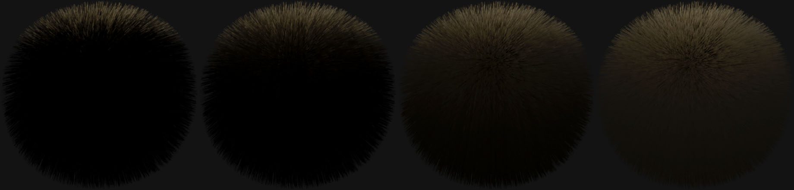

Obq_Hair
Class
Material
Output
Color RGB
Synopsis
The Obq_Hair shader is a look-driven dual scattering hair shader implementation of Sadeghi et al. "An artist friendly hair shading system" using Ou et al. "ISHair: Importance Sampling for Hair Scattering". This shader can output up to 14 AOVs to help you adjust the scale of each component.
Note : alHair, from the alShaders collection by Anders Langlands, implements the same papers and is more user friendly.
Note : We strongly suggest you read the paper "An artist friendly hair shading system" if you want to learn more about this shader. The works of Marschner et al. "Light Scattering from Human Hair Fibers" and Zinke et al. "Dual Scattering Approximation for Fast Multiple Scattering in Hair" are also suggested.
Warning : At the moment, there is a disparity between some Windows and Linux renders. I hope to have the time to address this soon.

Fig.1 : Images from the movie "La belle et la bête". The face of the beast uses Obq_Hair.
Usage
Simply use this shader in the surface port of your hair material. Because preprocessing certain values helps to optimize this shader, there are 2 different types of parameters : non-texturables (shown in the UI) and texturables (shown in the render tree node). The non-texturables will be used to precalculate data needed for the dual scattering and should be set to values representing the texturable ones. If nothing is connected to a texturable parameter port, its non-texturable value will be use. The scales of the 4 lobes (R, TT, TRT-G and G) should always sum to 1. The default values are good approximates using the values in the papers. There are no internal fresnel terms but you can use external fresnel nodes to drive the different scales.
Note : We suggest when doing the look development to output the 7 AOVs (using the Merge direct and indirect mode) of the components in order to figure out the various parameters and later use the MIS Mode All lobes at once N times with N=1, which merges the 4 lobes together but renders faster and with less noise. You can mix the 4 main lobes with the scattering lobes in compositing later.
Warning : If you want the dual scattering to work, you must add an Arnold Parameters property to your hair and uncheck opaque.
BCSDF
(Bidirectional Curve Scattering Distribution Function)
Use preprocessing parameters only [use_pre_only]
When this is checked, only non-texturable parameters for the BCSDF will be used, all plugged-in texturables are ignored.
Note : You should always set non-texturable lobe colors in a way that they represent the textured hair colors (average color) because they are used to precalculate certain data for dual scattering. If you change the textured hair colors, you need to adjust the non-texturable colors. You can simply check this option and render to verify instead of unplugging the nodes plugged in texturables.
Primary Highlight (R lobe)
Each hair is represented as a dielectric cylinder. This lobe corresponds to the light reflected by the hair without being transmited (refracted) first.
Color [color_R]
The color of the primary highlight. This is usually white because it represents the light that bounces off the hair without going through the hair.
Scale [scale_R]
The scale of the primary highlight. Because the lobe functions are unit height (higest value is 1) we need to scale the lobes relatively between each other and have them sum to 1.
Note : Based on the papers, the R lobe should be approximately a third of the TT lobe, twice the TRT-G lobe and half the glints (g) lobe. Fresnel terms could be added for more realism.
Shift(°) [alpha_R]
The longitudinal shift in degrees towards the tip of the primary highlight. The hair is made up tilted scales and because of that, the highlight is shifted towards the root of the hair, which explains the negative value.

Fig.2 : From left to right, shifts of : -7.5°, 0° and 7.5°. The root of the hair is at the top of the image and the tip at the bottom.
Note : Based on the papers, values between -10° and -5° are those of normal human hair. This parameter is known as alpha_R. The TT and TRT lobes are tilted towards the tip of the hair and their values are : alpha_TT = -alpha_R/2 and alpha_TRT = -3*alpha_R/2.
Width(°) [beta_R]
The longitudinal width in degrees of the lobe (standard deviation). This represent how fat is the highlight's lobe.

Fig.3 : From left to right, widths of : 7.5°, 15° and 3.75°.
Note : Based on the papers, values between 5° and 10° are those of normal human hair. This parameter is known as beta_R. The TT and TRT lobes width can be derived from the beta_R value : beta_TT = beta_R/2 and beta_TRT = 2*beta_R.
Other shifts and widths based on primary HL [normal_shifts_widths]
When this is checked, longitudinal shifts and widths of TT and TRT lobes will be calculated using the relations shown in the notes above.
Secondary Highlight (TRT lobe)
For a better control, the secondary highlight (TRT lobe) is divided in two subcomponents : the TRT-G (TRT minus G) lobe and the glints (G lobe). The secondary highlights represent light being first transmitted in the hair, then reflected inside the hair and transmitted back out. The glints are 2 symmetrical bright peaks and represent caustics.
Color [color_TRT]
The color of the secondary highlight without the glints. This is actually the TRT-G lobe. This is usually more saturated than both R and TT lobes because the light has travelled longer inside the hair and has been absorbed more. This is totally independent from the color of glints.
Scale [scale_TRT]
The scale of the secondary highlight without the glints.
Shift(°) [alpha_TRT]
The longitudinal shift in degrees towards the tip.
Width(°) [beta_TRT]
The longitudinal width in degrees of the lobe (standard deviation).
Glints (G lobe)
The shift and the width parameters of the TRT component influences both the TRT-G and the glints, but the colors and scales are independent.

Fig.4 : From left to right, widths of TRT for glints : 15° and 7.5°.
Color [color_g]
The color of the secondary highlight without the glints. This is actually the TRT-G lobe. This is usually more saturated than both R and TT lobes because the light has travelled longer inside the hair and has been absorbed more. This is totally independent from the color of glints.
Scale [scale_g]
The scale of the secondary highlight without the glints.
Azimuthal width(°) [gamma_g]
The azimutal width in degrees. This represents how fat the glints are perpendicularly to the direction of the hair.

Fig.5 : From left to right, azimuthal widths of glints : 17.5° and 9°.
Half angle between peeks (°) [phi_g]
The half angle between the glints. A higher value will seperate the 2 peeks and a smaller value will bring them closer.

Fig.6 : From left to right, half angle between peeks of glints : 37.5° and 20°.
Rimlight (TT lobe)
The rimlight correspond to the light that is transmitted in the hair on one side and transmitted again on the other side, i.e. that goes through the hair. This is for an unshadowed hair, you need dual scattering or an opacity smaller than 1 to see the rimlight through more than one hair.

Fig.7 : A backlit lump of hair (red light, no dual scattering).
Color [color_TT]
The color of the rimlight. This is usually more saturated than R, but less than TRT lobes.
Scale [scale_TT]
The scale of the rimlight.
Shift(°) [alpha_TT]
The longitudinal shift in degrees towards the tip.
Width(°) [beta_TT]
The longitudinal width in degrees of the lobe (standard deviation).
Azimuthal Width(°) [gamma_TT]
The azimuthal width in degrees of the lobe (standard deviation). This represent how fat the rimlight is perpendicularly to the direction of the hair.
Dual Scattering (B.S. and F.S. lobes)
Dual scattering simulates light bounces inside the volume of hair.

Fig.8 : A lump of hair lit from the front and the back. From left to right : single scattering, back scattering+forward scattering and final render.
Single Scattering Mode [singleScatteringMode]
When checked, no scattering will be calculated.
Back Scattering
Back scattering accounts for light that bounces of hairs and arrives at the shading point.
Note : Note that this is already colored in function of the BCSDF lobes.
+ Shift (°)[alpha_back]
Additionnal longitudinal shift in degrees.
+ Width (°)[beta_back]
Additionnal longitudinal width in degrees.
Color Mult [color_back]
Multiplies the result by this color.
Note : This is normally white, but you can change this color to create a desired look.
Scale [scale_back]
Scale of the back scattering lobe.
Note : This is normally 1, but you can change this color to add some sort of diffuse color inside the hair.
Back scattering density [d_b__pre, d_b]
Density of hair.
Note : This is around 0.7 for human hair.
Forward Scattering
Forward scattering accounts for light that goes through the hairs and arrives at the shading point.
Color Mult [color_forward]
Multiplies the result by this color.
Note : This is normally white, but you can change this color to create a desired look.
Scale [scale_forward]
Scale of the forward scattering lobe.
Note : This is normally 1, but you can change this color to add some sort of diffuse color inside the hair.
Forward scattering density [d_f__pre, d_f]
Density of hair.
Note : This is around 0.7 for human hair.
Direct Illumination
Scale [scale_direct]
Scale of the direct illumination.
Color Mult [color_direct
Multiplies the direct illumination result by this color.
MIS Mode [color_direct
Mode of multiple importance sampling. Results using MIS will be less noisy.
| • | No MIS | : | Do not use MIS. | |
| • | All lobes at once N times | : | Does MIS considering all the lobes at once. This is the fastest MIS. Note : The number of samples (N), should always be 1 in this case. Warning : This will merge all four primary lobes results together. | |
| • | Randomly select N lobes | : | Does MIS by choosing a random lobe based on an energy function N times. Best way to do MIS and keep seperate lobes AOVs (using N = 1). | |
| • | Additional lobes according to samples | : | Do MIS with each lobe N times according to the settings in sampling group. Useful when you have a lobe that is particularly noisy. Note : The number of samples (N) for each lobe, should not be greater than 1. |
Indirect Illumination
Samples [samples]
The square root of the number of samples that will be used for indirect lighting. Use 0 to disable indirect illumination.
Note : The samples are of type glossy.
Use imporance sampling [useImportanceSampling]
Check this to use importance sampling for the indirect illumination.
Note : This should always be checked.
Scale [scale_indirect]
Scale of the indirect illumination.
Color Mult [color_indirect]
Multiplies the indirect illumination result by this color.
Opacity
Opacity [opacity]
The opacity of the hair.
Unlink Self Opacity [unlinkOpacity]
You can separate the self opacity from the general opacity to either fake scattering in single scattering mode or affect the scattering intensity in dual scattering mode.
Self Opacity [shadow_opacity]
The opacity of the hair for shadow rays. This is available if you check "Unlink Self Opacity".
Intersection modifier (^) [numGMS_modifier]
This exponent modifies the number of hair intersections during the forward scattering computation (num^modifier) to allow light to go furter into the hair volume.

Fig.9 : A cross section of a lump of hair lit from above. Values of modifier (exponent) from left to right : 1, 1/2, 1/4 and 1/8.
Additionnal Options
Self rays between different shaders [checkShaderNameToo]
To check if the rays are self rays during the forward scattering computation, we use a pointer to the shader to compare if the source of the ray is the same as the receiver. This works when using either a single hair object or multiple hair objects with the same material. If you want the forward scattering to be calculated among different hair object with different materials, you have to check this. This will have a small impact on the speed, but will allow this. The only requirement is that the hair shader nodes must contain "Obq_Hair". So "Red_Obq_Hair" and "Obq_Hair_Blond" will work, but not "Obq_BlondHair".
RayType Optimization
To help things speed up, there is a ray switch inside the shader. The modes of computation depending on the ray types are :
| • | color | : | Use a constant color. | |
| • | direct (No Dual Scattering) | : | Use the shader in single scattering mode and only for direct lighting. | |
| • | direct+indirect (No Dual Scattering) | : | Use the shader in single scattering mode. | |
| • | Same as Camera Ray | : | Use the full direct+indirect illumination with dual scattering. Note : Only available for reflected and refracted rays. |
AOVs
Mode [aov_mode]
Fourteen (14) AOVs are available for this shader. To make things easier in terms of AOVs managing, you have a few modes available to you in order to merge certain lobes and illumination mode together.
Note : You can press the "Set Pass Hair Framebuffers" to set the proper framebuffers in the pass.
Presets
"Default Settings" will reset all settings to default.
"Normalize scales to 1" will normalize the scales of the 4 primary lobes to 1.